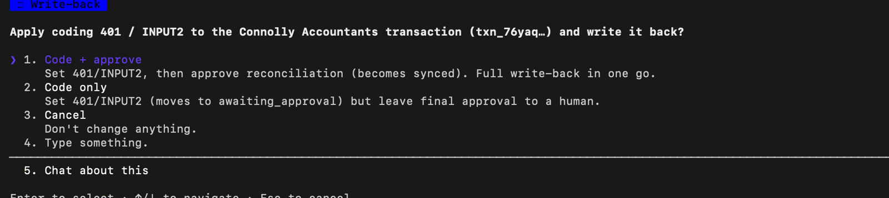

Every month
a frame, not a case study
11:40pmthe close, with nobody left to do it
Every month, a founder proves their own numbers at eleven o'clock.
No controller. No finance team.
This is the close when nobody is left to do it.
What the close actually is
described process · not a measurement
Month end is six steps, in this order. Step three is where the guessing lives.
01Pull the datathe statement and the invoice list land in the ledgerSeapoint
02Match invoice to bankrules clear the clean majority, sync to XeroSeapoint
03Work the unmatched lista person picks a GL code per row — nothing records it was a guessthe judgment queue
04Post recurring journalsaccruals, prepayments, depreciationnot ours
05Tie out the balanceseach account agreed to a supporting schedulenot ours
06Package and approvethe board pack rebuilt by hand, someone senior signswaits on a human
The same six steps, every month end — at a twelve-person company with no controller, all six are still someone's night.
Steps one and two are solved. Seapoint does them.
Step three is a person at eleven o'clock, choosing codes from memory.
close-keeper goes to work on step three. That's the whole pitch.

Seapoint MCP · read with my own permissions
real data · styled replay of the live pull
September spend£162,333.84
Debit transactions203
Categories12
Step 3 · judgment queue7 open
So we handed it the books — accounts, transactions, invoices.
One question, twelve categories, £162,333.84 answered.
Nobody asks
live-session counts · 2,664 transactions
Everything clears the gate quietly. Anything that doesn't, it does not fill.
classifyrange & intent
generatevalues / code
verifyagainst source
repairup to 3×
blankroute to human
exception queue · distribution
reconciled 2,629
awaiting approval 21
needs review 7
unreconciled 7
needs a human 14
it refuses to code 10
0
of 2,664.
Point five per cent.
Point five per cent.
real session · the needs-review queue, in its own words

Of 2,664 transactions, 2,629 clear themselves.
Fourteen need a human. Point five per cent.
Not a wall of output — fourteen lines, each with a reason.
Governed memory · the replay gate
captured local run · key-free, no model
Nothing is written silently. The gate refuses until it has earned the answer.
activate before validating
REFUSED — rule has no validation
positive-only replay, 1 case
REFUSED — hard_negative / scope_boundary / conflict all False
7 labeled replays · 0 regressions
eligible → status: active — and even then, suggested, never silently posted.
real session · ledger write-back, held for my go-ahead

Then it has to earn the answer.
Activate a rule before validating it — refused.
One happy case? Still refused. No hard negative, no scope boundary, no conflict.
Seven labeled replays, zero regressions. Only then is it active.
Even then, it suggests. Nothing writes until I say so.
The one I'd show a partner
real session · surfaced, not written
Meridian Insurance£1,240.00
filed asLegal & Professional fees
coded to433 Insurance · 0% — recategorised
receiptnone attached
VAT at stake£248.00
FLAGGED — the filing and the coding disagree. Nothing writes until you say so.
the agent's note — "Description unambiguous (professional-indemnity insurance); insurance premiums are VAT-exempt; suggestion agrees. also recategorises from Legal & Professional Fees → Insurance"
 NOT WRITTEN
NOT WRITTEN
Filed as legal fees. Coded as insurance. No receipt.
£248 of VAT rides on which one is right.
A tired founder rubber-stamps it. This one won't.

FinOps Hackathon · Seapoint × 13books Capital × Claude
MIT · repo · molab walkthrough
the pitch, in their words
"97.8%"
vendor accuracy claim · unaudited
what we show
0.5%
counted — 14 of 2,664
14 blanks. 0 guesses.
Enterprise close software needs a controller and £150K a year. A twelve-person startup has neither.
close-keeper
it only interrupts the close
when the close needs you
when the close needs you
Everyone in AI accounting sells you accuracy.
Ninety-seven point eight per cent, taken on faith.
We sell the point five per cent it won't take on faith.
close-keeper — github.com/udirobert/tieout